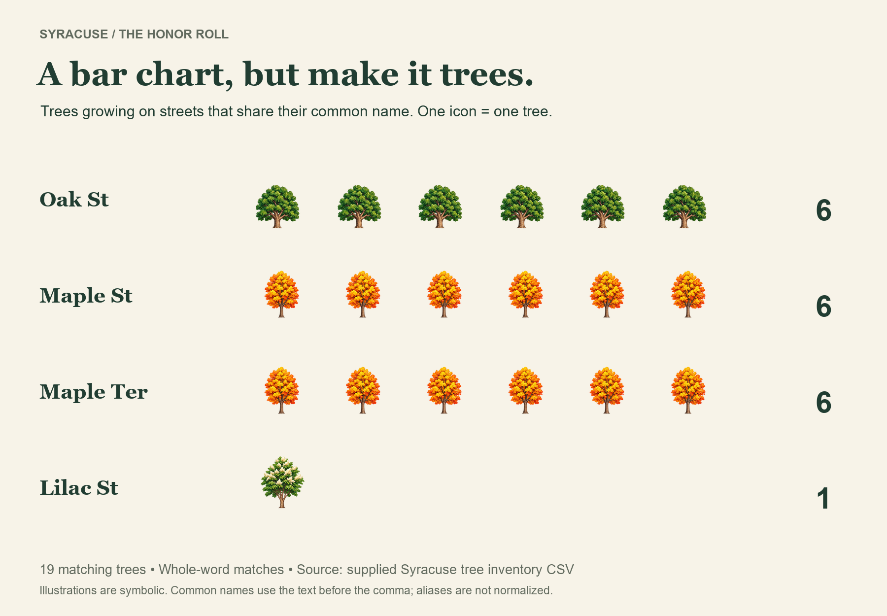

Trees ·
Are there oak trees on Oak Street?
Six oaks, 56 maples, and a spreadsheet investigation into whether Syracuse trees take street names literally.
I’ve been branching out into some very important research. Specifically: are there oak trees on Oak Street?
Deciding to get to the root of this matter, I checked out the city's tree inventory on data.syr.gov. The answer was "yes". The CSV I checked lists six oak trees on Oak Street: four red oaks, one swamp white oak, and one black oak.
Naturally, I branched into related investigations. Using Python to compare tree names with street names, I found 19 whole-word matches: six oaks on Oak Street, six maples on Maple Street, six more on Maple Terrace, and one Japanese tree lilac on Lilac Street.

{kind=link}
Some trees understood the assignment.
{kind=link}
Each illustrated tree represents a real tree in Syracuse.
If we loosen the rules to include names like Oakwood and Maplehurst, the count rises to 65. But I wanted to see who followed the instructions exactly.
Then I checked the trees that got lost.
Oak Street has 56 maples. And six oaks.
The maples outnumber the oaks by more than nine to one. Oak Street may want to schedule a branding meeting.
{kind=link}
Oak Street has an identity crisis. Other kinds of trees live there, too; this comparison shows just the maples and oaks.
Meanwhile, 11 oaks are on Butternut Street, eight are on Walnut Place, and four are on Cedar Street. Of the 1,836 oak records in the CSV, 1,830 have addresses somewhere other than Oak Street.
Some trees read the street signs. Others branch out.
Source and method: City of Syracuse tree inventory, data.syr.gov. Counts reflect the downloaded CSV, not a new field survey. I compared the common-name text before the comma in SPP_COM with STREET, ignoring capitalization; alternate names weren't reconciled. Map dots use recorded coordinates, with illustrations offset for readability. Tree artwork is AI-generated and symbolic. Basemap © OpenStreetMap contributors.